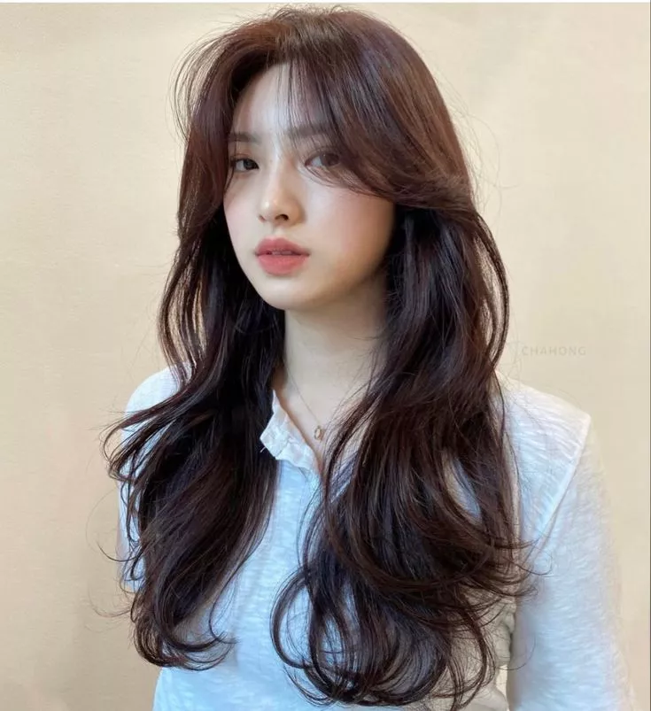
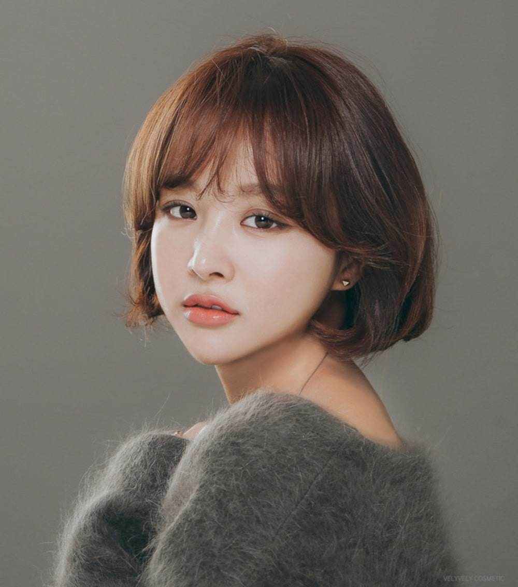
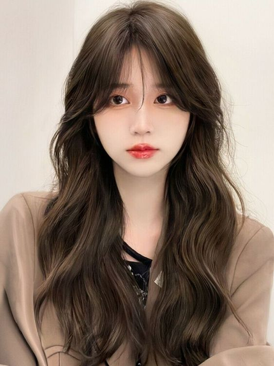
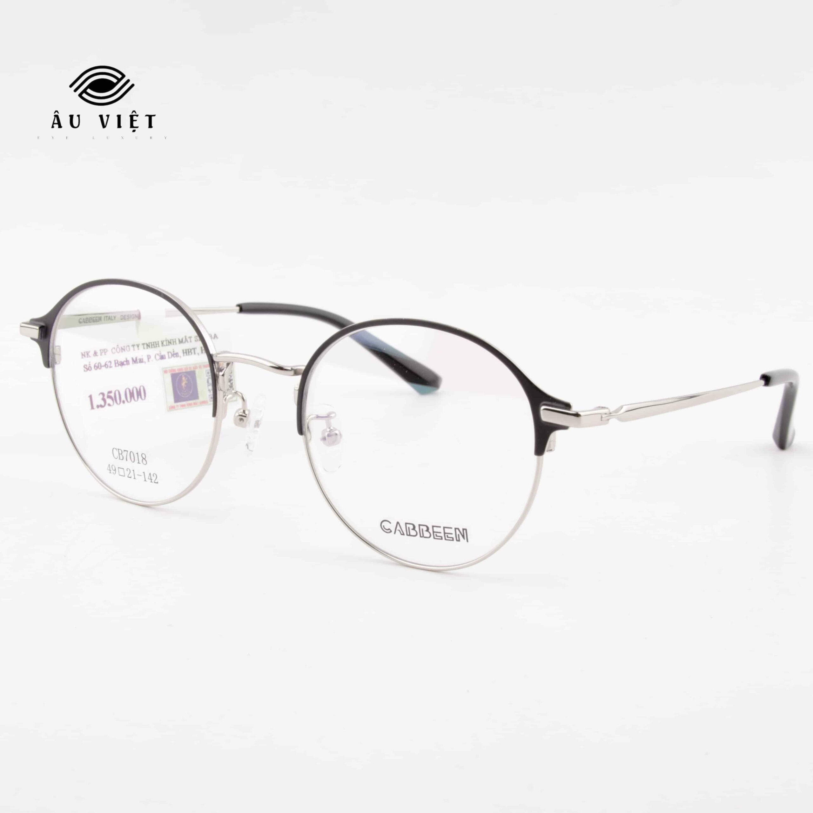
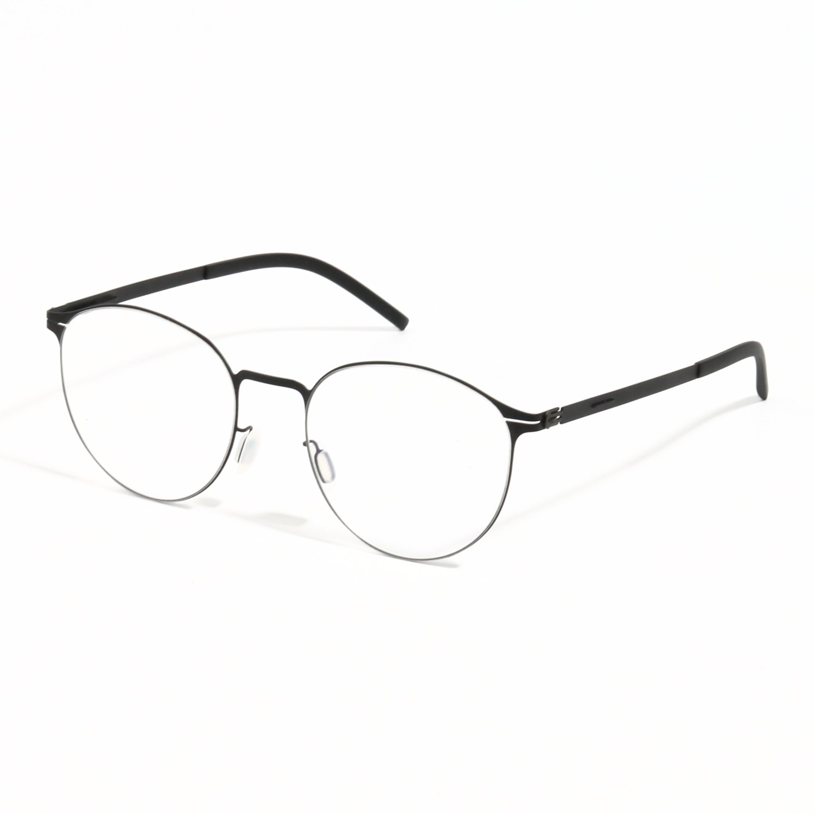

Đây là "kiệt tác" dành riêng cho bạn. Những lọn layer được tỉa công phu, mềm mại tựa dòng suối ôm lấy gương mặt sẽ tạo ra chuyển động thị giác uyển chuyển, một nghệ thuật điêu khắc tự nhiên làm thon gọn và che đi phần xương hàm vuông vức một cách hoàn hảo nhất.
Chi tiếtKiểu tóc bob với độ dài chấm cằm hoặc qua cằm một chút, được uốn cụp tinh tế sẽ là "vũ khí thời trang" tối thượng giúp che lấp góc hàm siêu đỉnh. Nó mang đến vẻ đẹp thành thị, năng động, pha trộn giữa sự sắc sảo và nét nữ tính, thời thượng không thể chối từ.
Chi tiếtHãy để những con sóng tóc bồng bềnh, mềm mại như những vũ công ba-lê nhảy múa quanh gương mặt bạn. Chúng sẽ phá vỡ sự nghiêm nghị của cấu trúc xương, tạo cảm giác khuôn mặt thanh thoát hơn và mang đến vẻ đẹp lãng mạn, bay bổng đầy cuốn hút, đậm chất thơ.
Chi tiếtĐường cong hoàn hảo của gọng kính tròn hoặc oval sẽ là lời đối thoại đầy nghệ thuật với những đường thẳng trên gương mặt. Sự tương phản này tạo ra một bản giao hưởng thị giác, trung hòa và cân bằng một cách xuất sắc các góc cạnh sắc sảo của khuôn mặt chữ điền.
Chi tiếtTrở thành một nghệ sĩ điêu khắc thực thụ với nghệ thuật sử dụng ánh sáng và bóng tối. Nắm vững kỹ thuật contour để làm mềm mại vùng góc hàm một cách chuyên nghiệp và tập trung bắt sáng (highlight) các vùng trung tâm để kiến tạo một gương mặt thon gọn, có chiều sâu và thu hút mọi ánh nhìn.
Chi tiếtĐặc điểm nhận diện lớn nhất và cũng là nét quyến rũ đặc trưng làm nên thương hiệu của khuôn mặt vuông chính là tỉ lệ vàng gần như cân bằng tuyệt đối giữa chiều rộng của vùng trán, gò má và xương hàm. Đừng vội xem đây là một khuyết điểm cần che giấu, bởi chính cấu trúc điêu khắc này đã tạo nên vẻ đẹp biểu tượng, thần thái quyền lực cho hàng loạt minh tinh hàng đầu thế giới như Angelina Jolie, Keira Knightley hay Sandra Bullock. Nét sắc sảo, kiên định, khí chất sang trọng và một vẻ đẹp không thể hòa lẫn chính là những món quà mà tạo hóa đã ban tặng cho bạn. Sứ mệnh của chúng ta là học cách làm chủ và tôn vinh vẻ đẹp độc đáo ấy, biến nó thành vũ khí chinh phục mọi ánh nhìn.

Quy tắc vàng bất biến trong việc lựa chọn kiểu tóc cho gương mặt vuông chính là "kiến tạo sự mềm mại và chuyển động". Mọi lựa chọn thông minh đều xoay quanh việc sử dụng những đường cong, những lọn tóc uốn lượn hay những tầng tóc được cắt tỉa ôm nhẹ nhàng vào khuôn khổ gương mặt. Chúng có tác dụng thần kỳ trong việc tạo ra ảo giác thị giác, thu gọn góc hàm một cách tự nhiên, đồng thời hướng sự chú ý của người đối diện lên "cửa sổ tâm hồn" là đôi mắt và nụ cười rạng rỡ của bạn. Hãy biến sự góc cạnh thành nét cá tính đầy cuốn hút, một tuyên ngôn về vẻ đẹp hiện đại và mạnh mẽ.
Tóc layer dài chính là "chân ái" không thể chối từ, là giải pháp tối ưu và thanh lịch nhất cho khuôn mặt chữ điền. Việc tỉa tóc thành nhiều lớp (layer) so le một cách có chủ đích, với các tầng tóc ngắn nhất bắt đầu từ ngang cằm hoặc qua cằm đổ xuống, sẽ giúp các lọn tóc có độ rủ tự nhiên, tạo thành một dòng chảy uyển chuyển ôm trọn lấy hai bên quai hàm. Kỹ thuật này phá vỡ hoàn toàn sự đơn điệu của những đường cắt thẳng tắp và cứng nhắc, mang lại sự thanh thoát, chiều sâu và chuyển động sống động cho mái tóc. Dù bạn sở hữu mái tóc mỏng muốn tìm kiếm sự bồng bềnh hay mái tóc dày cần được tỉa tót cho nhẹ nhàng hơn, kiểu tóc này đều là một lựa chọn không thể tuyệt vời hơn. Hãy yêu cầu nhà tạo mẫu tóc tạo thêm những lọn "mái bay" (curtain bangs) dài để обрамляя gương mặt thêm phần duyên dáng.

Ai nói mặt vuông không thể chinh phục tóc ngắn? Một mái tóc bob hoặc lob (long bob) với chiều dài lý tưởng vừa qua xương cằm, kết hợp cùng phần đuôi được uốn cụp nhẹ nhàng hoặc sấy phồng ôm vào trong sẽ "giấu nhẹm" đi phần khung hàm một cách ngoạn mục, tạo cảm giác gương mặt thon dài hơn. Kiểu tóc này mang đến một vẻ ngoài cực kỳ hiện đại, trẻ trung, năng động và toát lên khí chất của một người phụ nữ độc lập. Tuy nhiên, hãy ghi nhớ một lưu ý tối quan trọng: tuyệt đối tránh kiểu bob bằng cắt ngang (blunt bob) với độ dài ngay cằm. Đường cắt sắc lẹm đó sẽ vô tình tạo thành một đường khung song song với xương hàm, nhấn mạnh và làm cho góc cạnh của bạn lộ rõ hơn bao giờ hết. Hãy ưu tiên những kiểu bob tỉa layer nhẹ hoặc bob bất đối xứng (asymmetrical bob) để thêm phần cá tính.

Những lọn xoăn to, buông lơi tựa những con sóng lăn tăn trên mặt hồ luôn là biểu tượng của vẻ đẹp lãng mạn, nữ tính và dịu dàng vượt thời gian. Đối với một gương mặt vuông vốn đã sắc sảo và cá tính, việc kết hợp với mái tóc uốn lọn lớn bồng bềnh sẽ tạo ra sự bù trừ hoàn hảo đến không ngờ. Sự mềm mại, phi cấu trúc của từng lọn xoăn sẽ cân bằng lại những đường nét mạnh mẽ, mang đến một tổng thể hài hòa, quyến rũ và đầy cuốn hút. Để thăng hạng vẻ ngoài thêm trẻ trung và sành điệu, đừng ngần ngại kết hợp cùng kiểu mái bay chữ bát thời thượng hoặc mái chéo dài. Đây là kiểu tóc lý tưởng cho những buổi hẹn hò lãng mạn hay những sự kiện đòi hỏi vẻ ngoài sang trọng, thướt tha.
Kính mắt không chỉ là một vật dụng hỗ trợ thị lực, nó là một vũ khí thời trang đầy quyền năng, một món phụ kiện có thể định hình lại phong cách và làm dịu đi những đường nét trên gương mặt chỉ trong tíc tắc. Với cấu trúc xương hàm vuông vắn, những khung mắt kính sở hữu đường viền cong mềm mại, uyển chuyển sẽ là đối trọng tuyệt vời, đóng vai trò như một "kiến trúc sư" tài ba tạo ra sự cân bằng thị giác hoàn hảo và nâng tầm phong cách của bạn.

Hãy xem đây là một quy tắc hình học cơ bản: đường cong đối lập và làm mềm đường thẳng. Dù là kính mát hay kính cận, những gọng kính có viền cong như hình tròn, oval, hay dáng Panto cổ điển đều tạo ra sự tương phản đầy nghệ thuật với các góc cạnh thẳng của gương mặt. Chúng phá vỡ sự cứng nhắc, làm mềm mại tổng thể và khéo léo thu hút sự tập trung của người đối diện vào đôi mắt, vào "cửa sổ tâm hồn" của bạn, thay vì phần hàm dưới. Để có một vẻ ngoài vừa cổ điển vừa hiện đại, hãy thử những mẫu kính có dáng Browline (chỉ có viền đậm ở trên) hoặc Cat-eye (mắt mèo) với các góc được bo tròn mềm mại, chúng sẽ tạo hiệu ứng nâng cơ mặt một cách tinh tế.

Những chiếc gọng kính kim loại với thiết kế mỏng nhẹ, thanh mảnh là một lựa chọn thông minh theo chủ nghĩa tối giản, giúp gương mặt không bị cảm giác "cồng kềnh" hay nặng nề. Sự tinh tế của gọng kính sẽ không cạnh tranh hay đối chọi với những đường nét vốn đã mạnh mẽ của bạn, mà thay vào đó, nó cộng hưởng để tạo ra một ánh nhìn nhẹ nhàng, thanh thoát. Lựa chọn này toát lên vẻ trí tuệ, sang trọng và một gu thẩm mỹ tinh tế, rất phù hợp với môi trường công sở hoặc những ai theo đuổi phong cách thanh lịch.
- Tạo khối tối (Contour): Đây là nghệ thuật điêu khắc gương mặt bằng ánh sáng và bóng tối, một bước không thể thiếu để định hình lại khuôn mặt vuông. Hãy sử dụng một loại phấn contour tông màu lạnh (như xám nâu, taupe), không nhũ để tạo hiệu ứng bóng tự nhiên nhất. Dùng cọ chuyên dụng, tán phấn theo đường chéo từ điểm cao nhất của thái dương, lướt nhẹ xuống dưới xương gò má để tạo độ hốc. Quan trọng nhất, hãy nhấn đậm hơn theo hình tam giác ở hai bên góc hàm, sau đó tán đều về phía cằm. Kỹ thuật này tạo ra hiệu ứng bóng tối tự nhiên, đánh lừa thị giác và làm cho đường viền hàm trở nên mềm mại, thon gọn hơn đáng kể. Hãy nhớ quy tắc vàng: tán thật kỹ để không còn vệt phấn nào.
- Phấn má hồng (Blush): Vị trí đánh má hồng cực kỳ quan trọng để "hack" dáng mặt. Thay vì tán tròn trên má - điều này sẽ làm mặt bạn trông to hơn, hãy tập trung tán phấn ngay trên điểm cao nhất của xương gò má, sau đó dùng cọ tán xéo và hướng lên trên về phía thái dương. Thủ thuật này không chỉ tạo vẻ ửng hồng khỏe khoắn mà còn tạo hiệu ứng "nâng cơ" mặt một cách kỳ diệu, giúp khuôn mặt trông cao và thanh thoát hơn. Các tông màu như hồng đào, cam san hô hay hồng đất sẽ là lựa chọn tuyệt vời để mang lại vẻ tươi tắn, trẻ trung.
- Môi & Mắt - Nghệ thuật tạo tiêu điểm: Hãy áp dụng quy tắc "tập trung điểm nhấn" để điều hướng ánh nhìn. Khi bạn muốn hướng sự chú ý ra khỏi phần hàm, hãy biến đôi môi thành ngôi sao của buổi tiệc. Lựa chọn những màu son ấn tượng (đỏ rượu, đỏ gạch, cam cháy, hồng đất) với chất son kem lỳ hoặc satin sẽ ngay lập tức thu hút mọi ánh nhìn về trung tâm gương mặt. Ngược lại, nếu bạn muốn nhấn vào đôi mắt, hãy thử kiểu trang điểm mắt khói nhẹ nhàng hoặc một đường eyeliner mắt mèo sắc sảo. Khi đó, hãy giữ cho đôi môi một màu nude hoặc MLBB (My Lips But Better) để tạo sự cân bằng hoàn hảo cho tổng thể, kiến tạo một vẻ đẹp hài hòa và đầy chủ đích.